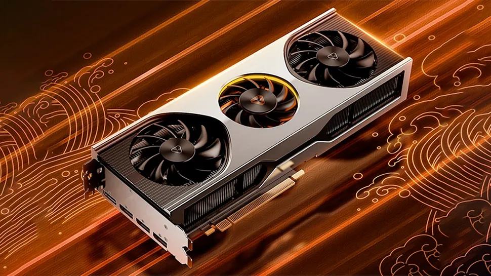

⚡ Parallel Design
A GPU runs a large number of lightweight cores, making it ideal for repeated and data-heavy operations.
Modern Computing Essentials
GPUs are highly parallel processors designed to perform thousands of operations at once. They are now core to gaming, machine learning, simulation, and creative production.

They increase speed for tasks that can be split into many smaller calculations.
A GPU runs a large number of lightweight cores, making it ideal for repeated and data-heavy operations.
Memory bandwidth and optimized pipelines allow GPUs to process huge workloads quickly.
The same hardware can serve graphics, science, AI, and content workflows.
A simple visual comparison of common GPU-focused workloads.
High frame-rate rendering with complex lighting effects.
Fast parallel matrix operations for model inference tasks.
Accelerates heavy numerical simulations and data analysis.
Modern RTX-class GPUs combine raster performance, AI tensor acceleration, and ray tracing hardware, making them useful for both gaming and professional compute workflows.